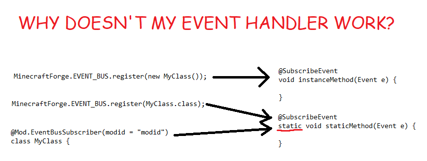

1. 事件概论
1.1. 什么是事件？
事件是什么？某个时间点发生的有一定关注度的“事情”。
考虑下面的代码：
Teacher teacher = aCertainClass.getInstructor();
teacher.post(homework);
教师发布了作业。一个包含有若干“作业”对象的 List 分派到了学生手中。
表面上，到此为止了。事实上，果真只能有这点逻辑吗？发布作业的过程中难道不会发生什么事情吗？比方说，教师是有课代表的：
studentRepresentative = teacher.getRepresentative();
homeworkList = homework.content();
for (entry : homeworkList) {
if (!studentRepresentative.validate(singleHomework)) {
studentRepresentative.broadcast("This homework has problem, please notify {} to fix it!", teacher);
}
}
再比如说，有别的老师会关心别的老师的作业，然后忽然决定“今天就少布置一点作业吧”。
if (homeworkList.content().size() > THRESHOLD) {
myProposedHomework = myProposedHomework.subList(1, 3);
}
1.2. Minecraft 没有事件系统
回到 Minecraft 上来——Modder 有时候希望能干涉原版的机制。问题来了，怎么干涉？原版的代码很多地方都是写死的，对于这些地方来说没什么办法。
举个例子，我想在玩家进入游戏时发出欢迎词，怎么办？原版是有那么一句话但那显然是写死的。
Forge 提供了一个完善的事件系统来解决这个问题。目前，Forge 有三条事件总线，分别用于发布不同类型的事件：
- 一般事件总线（
MinecraftForge.EVENT_BUS） - 矿物生成总线（
MinecraftForge.ORE_GEN_BUS） - 地形生成总线（
MinecraftForge.TERRAIN_GEN_BUS）
注意，FML 的那几个用于 Mod 加载的事件不算。那些是 Mod 加载周期的事件，在那个时候 FML 需要使用别的事件总线（具体来说，是 Guava 的事件总线）。
1.3. 事件订阅
按如下步骤操作：
- 确定需求，然后找事件
- 如果找到了对应的事件：
// 本方法返回值必须是 void
// 本方法的参数必须是一个事件，并且作为唯一的参数存在
// 本方法可以不是静态的，具体差别一会就会出现
@SubscribeEvent
public static void onEventFired(ARandomEvent event) {
// 当然这个 ARandomEvent 一定要换成某个真实存在的事件。
}
// 然后注册
MinecraftForge.EVENT_BUS.register(EventListener.class);
// 如果监听方法不使用 static，则应使用对应类的实例
MinecraftForge.EVENT_BUS.register(new EventListener());
以及注意一点，如果你订阅的事件属于矿物生成类的，或是地形生成类的（比如什么 InitNoise 这样的事件，那么请往 ORE_GEN_BUS 或者 TERRAIN_GEN_BUS 注册。
1.4. 自动注册
// 这个注解的意思是“将这个类注册到事件总线中去，该事件监听器属于 my_mod 这个 Mod”
// 它相当于 Forge 帮你执行了 MinecraftForge.EVENT_BUS.register(MyFirstEventListener.class)
@Mod.EventBusSubscriber(modid = "my_mod")
public final class MyFirstEventListener {
@SubscribeEvent
public static void onEventFired(ACertainEvent event) {
}
}
注意那个 static。当且仅当你使用 EventBusSubscriber 或 class 对象时你需要在方法上加 static。

1.5. 事件的取消与结果
注意到事件的监听器一定是一个返回值为 void（即无返回值）的方法。如果我要表达某种类似返回值的概念该怎么做，比如说“我通过某个事件来控制是否执行某一段代码”？
事件总线给出的答案是：@Cancelable 和 @HasResult。
@Cancelable 用于控制剩余的事件监听器。事件被取消后，默认不会再将事件传递给下一个事件监听器。是的，这里有责任链（Chain of Responsibilities）的影子。
// 只有带 @Cancelable 注解的事件可以被取消。尝试取消不可取消的事件会产生 UnsupportedOperationException。
// 实际操作中，并不需要额外的 isCancelable 检查，只需要查阅对应事件的 JavaDoc 的说明即可。
if (event.isCancelable() && !event.isCanceled()) {
event.setCanceled(true);
}
@HasResult 用于定义事件拥有一个“结果”。
if (event.hasResult()) {
Event.Result result = event.getResult();
// 事件结果有三种可能性：DEFAULT、ALLOW 和 DENY。其具体含义取决于具体的事件。
event.setResult(Event.Result.DEFAULT);
}
一般的责任链模式中，handler 会在能处理请求时停止将请求传递给下一个 handler。对应到事件总线系统中，便是 setCanceled(true)。对于不可取消的事件，相当于假定所有 handler 都不能独自处理“请求”（即事件）。但实际上，出于某种考虑，你可以选择接收被取消的事件——
@SubscribeEvent(receiveCanceled = true)
public static void onEventFired(ARandomEvent event) {
}
1.6. 优先级
很明显，同一个事件可以有好几个监听器在监听。这些监听器最终都会收到目标事件，但谁先谁后是没有定义的。如果我一定需要某种确定的顺序怎么办？解决方案是指定优先级。
@SubscribeEvent(priority = EventPriority.HIGHEST)
public static void onEventFired(ARandomEvent event) {
}
优先级有五种，按优先级从高到低依次是：HIGHEST、HIGH、NORMAL、LOW 和 LOWEST。默认，若不显式指定优先级，则使用 NORMAL。
1.7. 如果没有我需要的事件怎么办？
然后——如果你能看到这里：很好，你大概没找到你需要的事件。
- 如果你的事件是自己用的，请看下面一小节。
- 请仔细思考你的需求。你的需求是不是和原版的什么东西比较像？原版的东西是怎么做的？
- 再仔细思考你的需求。你的需求是不是已经有 Mod 实现过了？他们都是利用了什么事件？
- 否则你只能给 Forge 发 Pull request 了。
1.8. 但是我需要给自己的【某种机制】弄一个事件！
// @Cancalable // 允许取消的事件需要有这个注解。
// @HasResult // 有某种结果的事件应当有这个注解。
public class MyEvent extends Event {
public final Object foo;
//按照惯例，事件中的字段都应该是Final的
public MyEvent(Object foo) {
this.foo = foo;
}
}
// 发布事件。
// 这个post是有返回值，含义如下：
// true 代表事件被取消。事件必须有 @Cancalable 注解才可以被取消，并有可能令 EventBus.post 返回 true。
// false 代表事件成功发布。有 @Cancalable 的事件，且没有被取消时会返回 false。
// 若这个事件无法取消，一定会返回 false。
boolean result = MinecraftForge.EVENT_BUS.post(new MyEvent(aFoo));